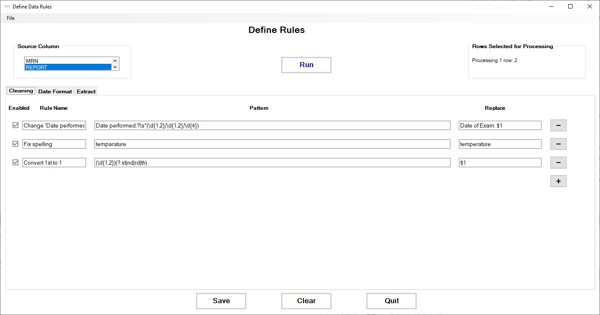
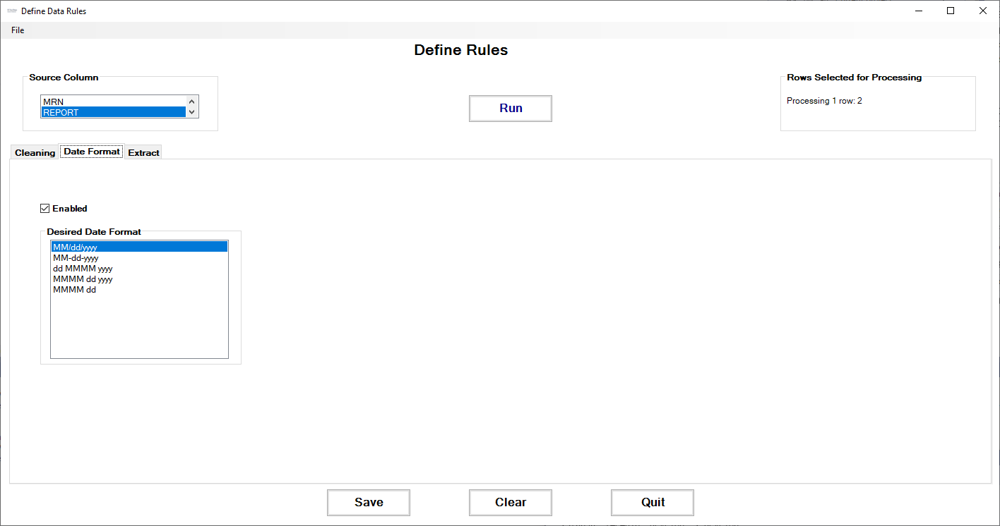

|
DECS Excel Add-Ins 1.3.0.2
Creates custom buttons in Excel to automate DECS tasks.
|
|
DECS Excel Add-Ins 1.3.0.2
Creates custom buttons in Excel to automate DECS tasks.
|
Creates custom buttons in Microsoft Excel that allow user to:
Notes fields for keywords, creating new columns.Office Add-Ins folder from Sharepoint.setup.exe.In cases where we want to extract data from free-text columns, we can use the Notes tools to define & run extraction rules.
We start in the Cleaning tab, defining cleaning rules to:
These rules are run before the data extraction rules.

Using the DateFormat tab, we can select which date format we want for output columns.

The Extract tab lets us define the Regular Expressions that extract data from free text.

Starting with these free-text notes:

Here's an example of the extracted data:
Notice how the original dates–in multiple formats–were automatically converted to a standard date format before extraction.
Researchers sometimes ask for the Social Vulnerability Index of a patient's neighborhood in order to provide a fuller picture of their social determinants of health. According to the US Centers for Disease Control's Agency for Toxic Substances and Disease Registry (CDC/ATSDR):
Social vulnerability refers to the potential negative effects on communities caused by external stresses on human health. Such stresses include natural or human-caused disasters, or disease outbreaks. Reducing social vulnerability can decrease both human suffering and economic loss.
We can provide this information by using the patient's address (preferred) or zip code to look up their census tract number, then retrieving their SVI info from a document published by the CDC/ATDSR, which lists the SVI information for each census tract (called a Federal Information Processing Standard (FIPS) code in the data files).
Address If we have a patient's address, we can lookup their exact census tract number using the US Census Bureau's online geocoding service. Here's an example of the query & response (the census tract number is here called GEOID):
Response:

Zip code Using just a zip code is less exact than a full address, as a zip code may contain many census tracts, and tracts may overlap with more than one zip code. However, we can use crosswalk files provided by the US Department of Housing and Urban Development to lookup all the census tracts present in a given zip code. Here's an example from the file ZIP_TRACT_122023.csv (available here). Notice the large number of census tracts which cross to a typical San Diego County zip code:
The data files published by CDC/ATDSR have one row of social vulnerability data for each census tract. The meaning of each column is explained here; we extract the column SPL_THEMES as the SVI score, and RPL_THEMES as the SVI ranking. While both single-state and entire-USA files are available, we've used the entire-USA file to be able to provide data both within & outside of California. If single-state files are used, please review the section Caveat for SVI State Databases in SVI documentation for important statistical concerns.
Here's an example of the SVI data from file SVI_2020_US.csv (available here) for the census tract 11001980000 returned in the example query above:

In cases where we're using only zip code information and have multiple census tracts, we return the average SVI score and ranking across all tracts associated with the zip code.